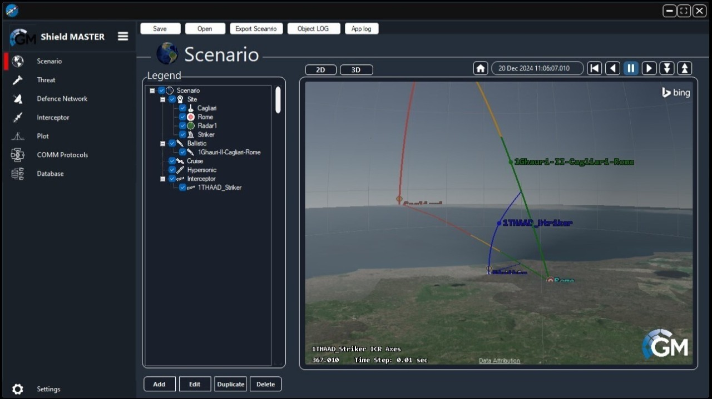

Shield Master UI Redesign
Rebuilt the UI for four workflows in Shield Master's Missile Designer Module (MDM) during an 8-week software development internship.
- Company
- GMSpazio, Rome, Italy
- Role
- Software Development Intern
- Duration
- 8 weeks, 20 hours/week
- When
- Summer 2024
Context
GMSpazio is an aerospace and defence software company based in Rome. Shield Master is their toolkit for analyzing missile defense scenarios and evaluating how defensive systems perform against incoming missile threats.
The first module in the Shield Master workflow is the Missile Designer Module (MDM), where users define and manage threat and interceptor databases. Its UI was being updated, and the update had been outsourced. The team was not happy with the result because of design and usability problems, so my job was to rebuild it from scratch.
Interns at GMSpazio usually work on research projects. That summer the team needed this UI finished, and my background in C# and game development was a good fit, so I took it on.

My role
I owned both the design and the implementation of the MDM UI. That covered the colour scheme, button design, visuals, and workflow, plus the code. The MDM lets users define a scenario, a threat missile, a defence network, and an interceptor, so I redesigned and reimplemented four workflows.
The outsourced UI was based on the original Shield Master UI, so I wasn't starting from nothing. The goal was a more polished version that people who used the old UI would still recognize.
- Day to day, I worked with a junior systems engineer, who answered my questions and gave feedback.
- The Head of Engineering supervised the overall work. He set what I worked on and my timelines, and judged whether the work was up to standard at the end.
When I started, the outsourced UI had inconsistent spacing, sizing, and formatting from tab to tab within a single workflow.
Process
Timeline
- Week 1: Study the old UI and identify the problems.
- Weeks 2 to 5: Sketch and wireframe the workflows, then prototype and test components.
- Weeks 6 to 7: Implement all UI components and workflows.
- Week 8: Assemble the UI across the four MDM workflows.
Learning the system
I had the original Shield Master available, so I walked through it several times to see what it did and how it was supposed to work, and read the code to see how it was built. I also went through the outsourced UI with the junior engineer to understand what the team disliked about it. I was new to UI design, so those conversations also taught me the basics of what to consider when building one.
What was wrong with the outsourced UI
The colour scheme was unappealing, and the workflows weren't smooth. One workflow went through several tabs in a row, and each tab was inconsistent. The Next button moved around from tab to tab, and buttons sitting side by side were different sizes and weren't aligned or evenly spaced.
Decision 1: Keep the layout familiar, or redesign completely?
A complete redesign would have let me make something more visually striking. But Shield Master was already in use, and a new layout would have meant users had to relearn the tool. The module's job was fairly simple, so it didn't need a flashy interface. It needed clean, intuitive workflows and components. I treated the work as an iteration on the old design instead. It also suited where I was in my skills, since the old UI gave me something to learn from.
Decision 2: Built-in Bunifu components, or custom ones?
Bunifu is a UI library built on top of WinForms. Its built-in components were the simpler option because they didn't need extra code or testing, but they have limitations and aren't meant for very dynamic interfaces. Custom components took more work and still had limits, but they let me build something that looked better and was easier to use. I chose custom components. The result wasn't dramatic, but a lot of the improvement came from small details.
Feedback
I met weekly with the junior engineer and the Head of Engineering. We went over the past week's work, looked at the options I had, decided which to go with, talked through implementation ideas, and cleared up requirements. Each meeting also set the plan for the next week. For example, I once made wireframes for one tab with three different button designs, and in the review we picked the one to finalize.
Results
- My colleagues extended the MDM UI to the other Shield Master modules after my internship ended, and it shipped in late 2024.
- A few months later, a colleague told me it was also being used as a UI template for another GMSpazio product.
- I took on a task the team needed done, which helped keep the project on schedule and took some load off my colleagues.
Reflection
There was a learning curve, first in how to design a UI and make design decisions, and then in understanding what the framework could and couldn't do. In coursework, someone has usually already worked out the difficult parts and given you guides and resources. Here I had a lot of ownership, and colleagues were often busy, so I had to do much of the research myself. That could be discouraging at times, but I learned to stick with it and be patient when something took longer than expected. Once I reached a reasonable level of proficiency, things moved faster and I worked with more confidence.
The company's source code and internal materials are not shared here. This page is limited to publicly available information about the product and my own work.